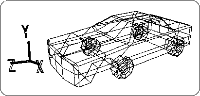
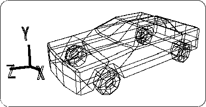

Return to previous page | Return to menu | Go to next page
To align the tires, first deselect the car ( Spacebar + left mouse button ).
Next, change the mode from “Single” to “Multi”.
Then select all the “cyl” to “cyl4” (tires) that are currently hidden, and
[Display] → [Hide] → [Toggle Selection]
Use to display. Then, it will look like the following figure (Figure 3-83).

Since the tire is out of position, fix it to a suitable position.
First, deselect all objects once. Then select only the front wheels (two) (must be in Multi mode).
From TAG mode to OBJ mode, select [TransZ] and move in the + Z direction while looking at the Right window.
Next, select only the rear wheels (two) and move in the + Z direction. When you are finished, return from Multi mode to Single mode. The result is shown below (Figure 3-84).
